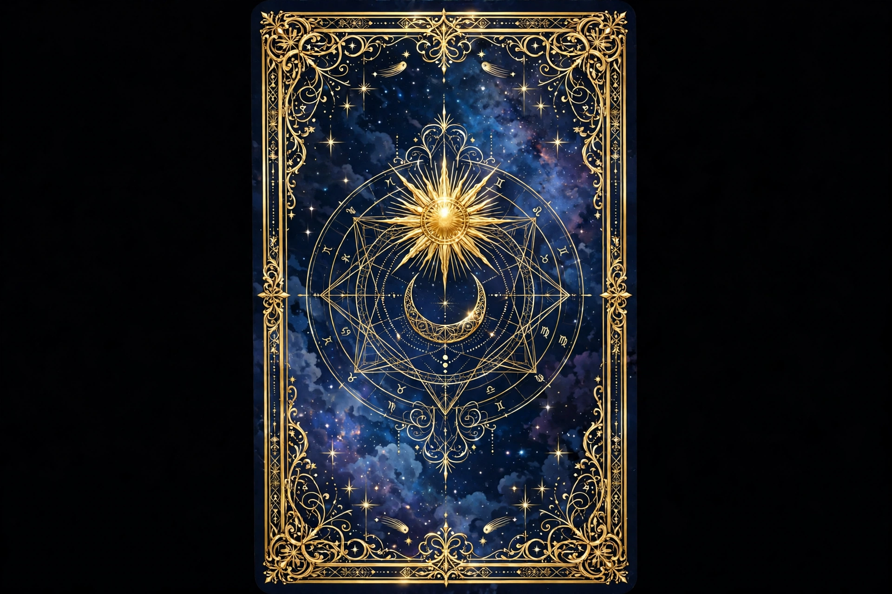

Tarot · Astrología · Guía Espiritual
Experiencia inmersiva
☾ SYLLENZA ☾
✦ Vidas Pasadas
¿Quién fuiste en tu vida pasada?
¿Quién fuiste en tu vida pasada? Elige una carta y descúbrelo.

UNODOS
TRES
Gratis